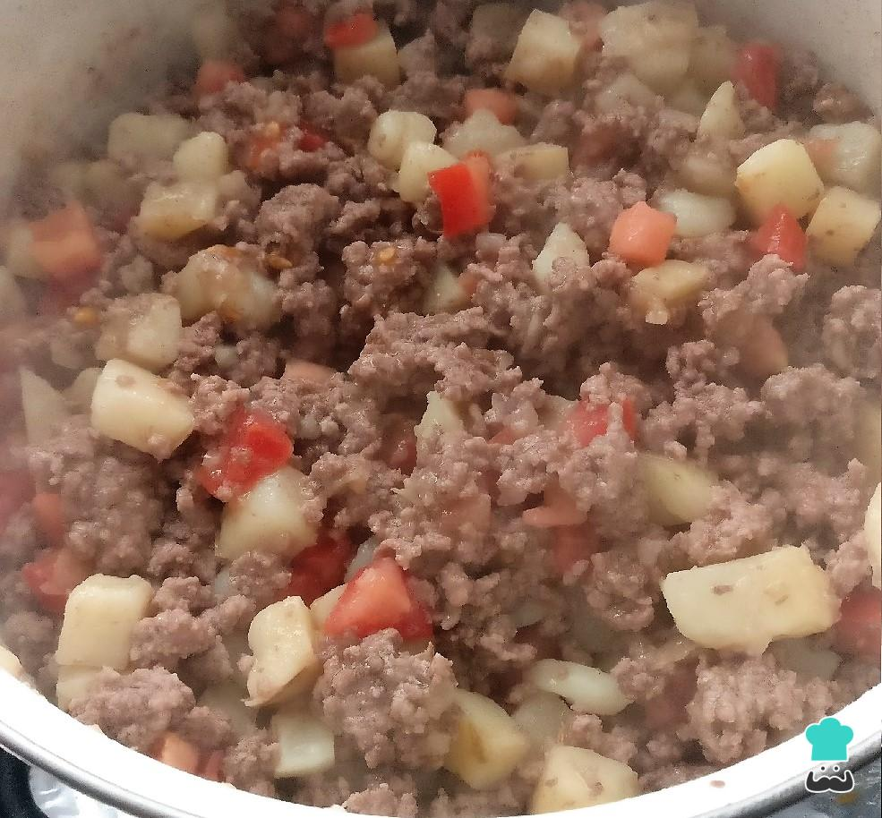

Picadillo
Main page

Mexican meal with enough protein for your daily, mixed with basic ingredients and not processed vegetables
Tasty, mexican and homelike, it will trip you on your grandma house with your siblings in the Sundays of family
Ingredients
- Ground beef: 500 grams
- Onion: 1 pcs
- Green bell pepper: 1 pcs
- Potato: 4 pcs
- Garlic: 4 pcs
- Tomato sauce: 8 oz
- Beef broth: 1.5 cups
- Salt
- Black pepper
- Cumin
- Coriander
- Bay leaf: 1 pcs
- Heat a large skillet over medium heat, add ground beef. Cook over medium heat while breaking up the meat. Cook until mostly browned, drain grease and return to heat.
- Add in diced onion, green bell pepper and potatoes. Continue to cook over medium heat until onion and peppers are softened. Add garlic and cook an additional 30 seconds.
- Pour in tomato sauce and beef broth. Add in seasonings: salt, pepper, cumin, and coriander. Stir to combine. Add bay leaf.
- Bring mixture to a simmer, cover and let cook for 10 minutes.
- Remove lid, stir, and continue cooking with the lid off for an additional 10 minutes or until potatoes are softened and most of the liquid is gone.
- Serve warm with flour tortillas and rice.
Easy, fast and tasty, youll never forget this dish, it will become one of your fav once you taste it!!
Back to top